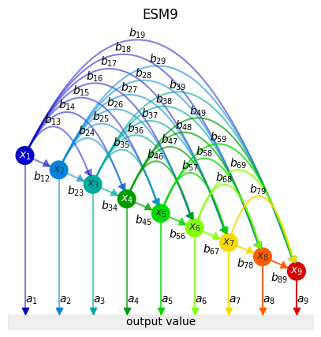
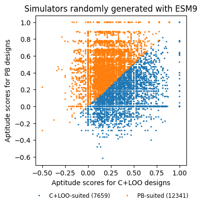

Test9 with Benchmarking
[1]:
from itertools import product
import os
from typing import NamedTuple
import matplotlib.pyplot as plt
import numpy as np
import pandas as pd
import seaborn as sns
from sklearn.metrics import cohen_kappa_score, accuracy_score
import statsmodels.api as sm
from tqdm.notebook import tqdm
from biodoe_tools.design import DOE, FullFactorial, CLOO, PlackettBurman, d_criterion, DOCLOO
from biodoe_tools.plot import bio_multicomp
from biodoe_tools.preferences import kwarg_savefig, outputdir
from biodoe_tools.simulation import Test9, MLR, AbstractSimulator, TheoreticalEffects
from biodoe_tools.simulation.esm9_metrics import edge_coverage, pathway_coverage, max_positive_edge_density, cai
[2]:
class Config(NamedTuple):
savefig: bool = True
out: str = outputdir
simulator: AbstractSimulator = Test9
run_names: list = None
suffix: str = "_test9"
output_filepath: str = f"{out}/esm{suffix}.feather"
conf = Config()
[3]:
fig, ax = plt.subplots(figsize=(5, 5))
esm9 = Test9(
edge_assignment=np.ones(45),
)
esm9.plot(ax=ax)
ax.set_title("ESM9")
if conf.savefig:
fig.savefig(f"{conf.out}/esm9.pdf", **kwarg_savefig)

[4]:
if not os.path.exists(conf.output_filepath):
np.random.seed(0)
edges = np.random.randint(-1, 2, (20000, 45))
conditions = dict(
pb=[Test9(v, model_id=i) for i, v in enumerate(edges)],
cloo=[Test9(v, model_id=i) for i, v in enumerate(edges)],
)
designs = dict(
pb=PlackettBurman,
cloo=CLOO,
)
[5]:
if not os.path.exists(conf.output_filepath):
for k, models in tqdm(conditions.items(), total=len(designs)):
[
m.simulate(
design=designs[k], n_rep=3
) for (i, m) in tqdm(enumerate(models), total=len(edges))
]
[6]:
if not os.path.exists(conf.output_filepath):
theoretical = [
TheoreticalEffects(
simulation=conf.simulator(v, model_id=i), random_state=0
) for i, v in tqdm(enumerate(edges), total=len(edges))
]
ground_truth = [
theoretical[i].summary(dtype=int) for i in tqdm(range(len(edges)))
]
[7]:
if not os.path.exists(conf.output_filepath):
import warnings
warnings.simplefilter('ignore')
pb_k, cloo_k = [], []
pb_dd, cloo_dd = [], []
def kappa(res, gt):
if gt.unique().size == 1:
f = lambda res, gt: accuracy_score(res, gt)
else:
f = lambda res, gt: cohen_kappa_score(res, gt, weights="linear")
return np.nan if res.isna().all() else f(res, gt)
# kappa = lambda res, gt: np.nan if res.isna().all() else cohen_kappa_score(res, gt, weights="linear")
for (pb, cloo, gt) in tqdm(zip(conditions["pb"], conditions["cloo"], ground_truth), total=len(edges)):
pb_res = MLR(pb).summary(anova=True, dtype=int, fill_nan=True)
cloo_res = MLR(cloo).summary(anova=True, dtype=int, fill_nan=True)
pb_k += [kappa(pb_res, gt)]
cloo_k += [kappa(cloo_res, gt)]
[8]:
def voronoi(c_p):
c, p = c_p
if c < .6 and p < .6:
ret = 0
elif c > p:
ret = 1
elif c < p:
ret = 2
else:
ret = 3
return ret
def voronoi_label(c_p):
return ["neither", "C+LOO", "PB", "both"][voronoi(c_p)]
[9]:
if os.path.exists(conf.output_filepath):
dat = pd.read_feather(conf.output_filepath)
else:
dat = pd.DataFrame({
"cloo": cloo_k,
"pb": pb_k,
"v": list(map(voronoi, [[c, p] for c, p in zip(cloo_k, pb_k)])),
"": list(map(voronoi_label, [[c, p] for c, p in zip(cloo_k, pb_k)]))
})
dat.to_feather(conf.output_filepath)
np.save(f"{outputdir}/esm_test9_edges", edges)
[12]:
fig, ax = plt.subplots(figsize=(4, 4))
# counts = dat.loc[:, ''].value_counts()
counts = (dat.pb > dat.cloo).astype(int).value_counts()
dat2 = pd.DataFrame({
"cloo": dat.cloo,
"pb": dat.pb,
"v": [["C+LOO-suited", "PB-suited"][v] for v in (dat.pb > dat.cloo).astype(int)],
"": [
["C+LOO-suited", "PB-suited"][v] + f" ({counts[v]})" for v in (dat.pb > dat.cloo).astype(int)
]
})
sns.scatterplot(
data=dat2.sort_values("v"),
x="cloo", y="pb", ax=ax, hue="",
# palette=[".7", "C0", "C1", "C4"],
palette=["C0", "C1"],
s=5, linewidth=0,
rasterized=True
)
ax.set(
title="Simulators randomly generated with ESM9",
xlabel="Aptitude scores for C+LOO designs",
ylabel="Aptitude scores for PB designs"
)
ax.legend(loc="upper center", fontsize="small", bbox_to_anchor=(.5, -.15), ncol=2, frameon=False)
if conf.savefig:
fig.savefig(f"{outputdir}/kappa_scatter_test9.pdf", **kwarg_savefig)

[11]:
dat
[11]:
| cloo | pb | v | ||
|---|---|---|---|---|
| 0 | 0.666667 | 0.526316 | 1 | C+LOO |
| 1 | 1.000000 | 0.181818 | 1 | C+LOO |
| 2 | 0.000000 | 0.526316 | 0 | neither |
| 3 | 0.307692 | 0.674699 | 2 | PB |
| 4 | 0.000000 | 0.457831 | 0 | neither |
| ... | ... | ... | ... | ... |
| 19995 | 0.240964 | 0.780488 | 2 | PB |
| 19996 | 0.000000 | 0.000000 | 0 | neither |
| 19997 | 0.156250 | 0.228571 | 0 | neither |
| 19998 | 0.357143 | 0.000000 | 0 | neither |
| 19999 | 0.000000 | 0.000000 | 0 | neither |
20000 rows × 4 columns
[ ]: